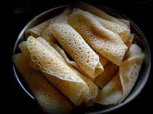

- Biriyani
- Peetha

Biriyani is a popular Bangladeshi food and is a staple for big functions such as weddings. Although biriyani is very popular food in the entire Indian subcontinent, the style and ranges of this dish varies and Bangladesh has some of its own styles too. Different biriyani houses have their own unique tastes and have made it into being considered a mainstream biriyani category today, such as the Hajir biriyani of Dhaka. The non-veg dish is usually a mixture of a special kind of rice, either mutton, beef or chicken, some potatoes and different essences which make it smell so good. It is itself a complete meal but can also have some kebab, salad and chutney with it.

Peetha is synonymous with winter in Bangladesh. Peethas can be eaten as a side, a starter, as dessert and some people may even have them as meal
during breakfast. During winter, making peetha and having peetha festivals is common in Bangladesh and makeshift shops pop up everywhere just selling
some fresh right out of the stove peethas. It is an inexpensive food yet can be considered very highly desired delicacy for how much people love it.
There are hundreds of kinds of peethas in Bangladeshi culture and many are specific to the different regions. Generally, most peethas in winter
are sweet and a lot of them are some combination of rice flour and jaggery. The culture in the rural areas of Bangladesh involves a lot of peethas
being made from around November when new crops are cut and flour is made and this wave continues till the coldest months of December and January.
Definitely every Bangladeshi loves peetha and has a favourite type.